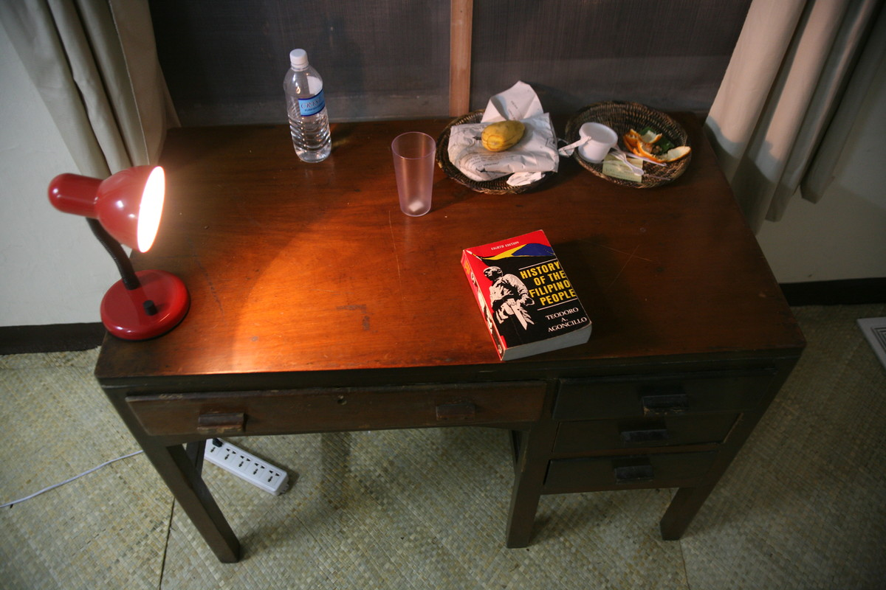
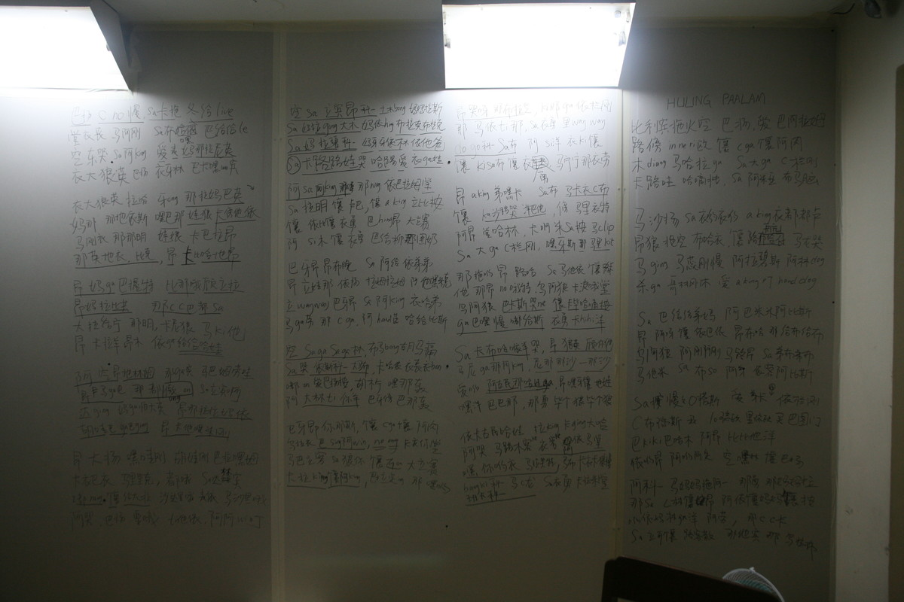
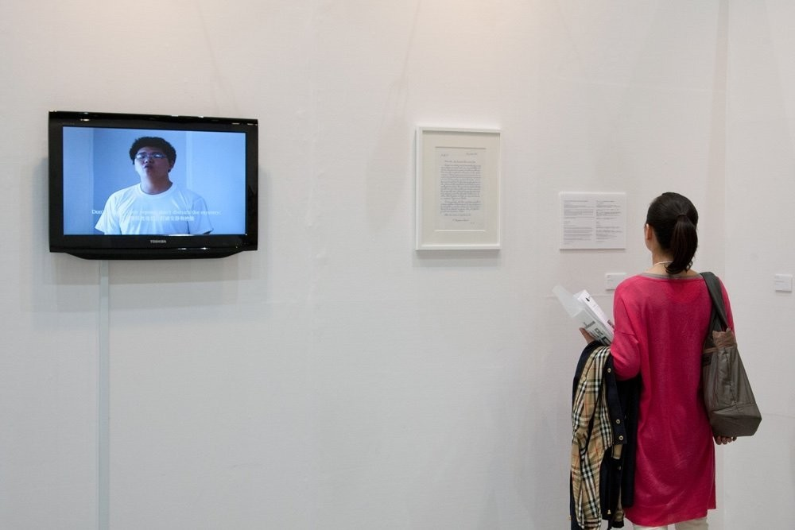

别了，我的祖国 | MY LAST FAREWELL
录像，录像为15分18秒，彩色单屏幕，有声，尺寸可变 ， 2008
Video, 15`18``, Single-channel\Color\Sound, Variable, 2008
在菲律宾马尼拉一个监狱遗址里，我花了七天时间，学会用菲律宾语朗诵菲律宾国父黎萨的诀别长诗《别了，我的祖国》。在第七天，面对镜头，我将这首诗用菲律宾语朗诵出来，全程记录了下来。
《别了，我的祖国》是菲律宾国父黎萨的诀别诗，写完这首诗即被西班牙殖民政府杀害。在诗中，革命家号召菲律宾年轻人追求自由，反抗西班牙殖民统治。
I learned to intone the poem – My Last Farewell, the last poem of Philippine national hero Jose Rizal - in Pilipino within 7 days at a relic of prison in Manila, Philippines. On the seventh day, I intoned the poem in Pilipino facing the camera which recorded the whole process.
My Last Farewell was the last poem of Philippine national hero Jose Rizal who was killed by the Spanish colonial government just after the creation of this poem. In the poem, the revolutionary called on the youths in Philippines to pursue freedom and to fight against the Spanish ruler.

圣托马斯大学，马尼拉
Univsrsity of St.Thomas, Manila

圣托马斯大学，马尼拉
Univsrsity of St.Thomas, Manila

东京艺术博览会宫津大辅亚洲映像特别收藏展，东京
To Voice, To Dance-From Daisuke Miyatsu Collection, Art Fair Tokyo 2013, Tokyo